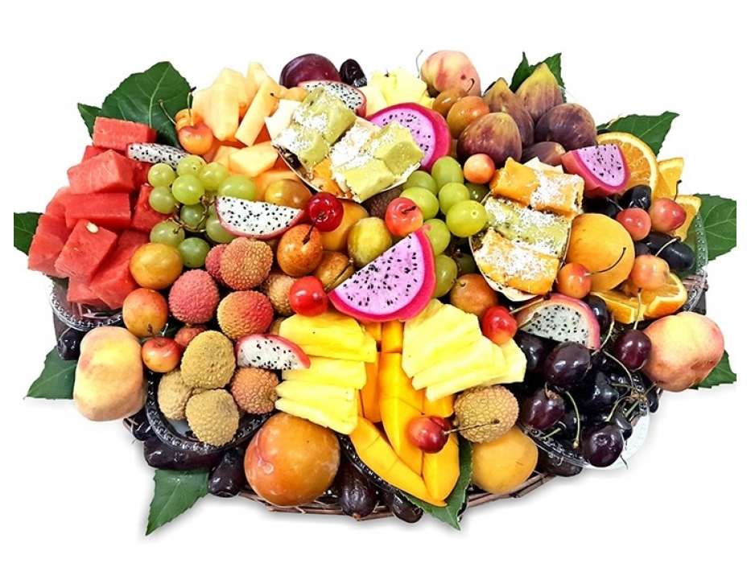

Understanding Fruit Consumption in the U.S.
Fruit consumption is a critical aspect of maintaining a healthy diet. This page explores trends in fruit consumption across the United States using interactive visuals and supplementary media.
-
Key Benefits of Fruit Consumption:
- Rich in essential vitamins and minerals
- Helps boost immunity and overall health
- Reduces the risk of chronic diseases
- Provides natural dietary fiber
- Improves digestion and metabolism
-
Popular Fruits Consumed in the U.S.:
- Apples
- Bananas
- Grapes
- Oranges
- Strawberries
-
Tips for Increasing Fruit Intake:
- Incorporate fruits into daily meals and snacks
- Opt for fresh, seasonal fruits
- Prepare smoothies and fruit salads
- Replace sugary desserts with fresh fruit
- Carry fruits as a healthy on-the-go snack
Interactive Fruit Consumption Chart
The chart below provides a detailed view of fruit consumption trends in the U.S. Feel free to interact with it to discover insights!

Learn More About Healthy Eating
Watch the video below to learn more about the importance of including fruits in your diet and how they contribute to a healthier lifestyle.